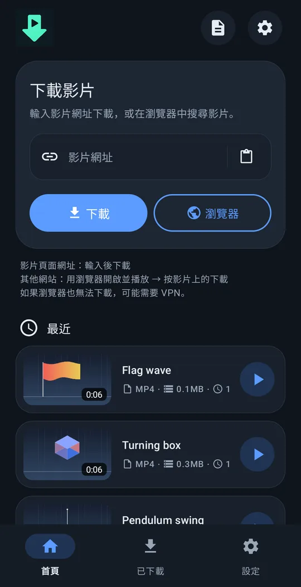
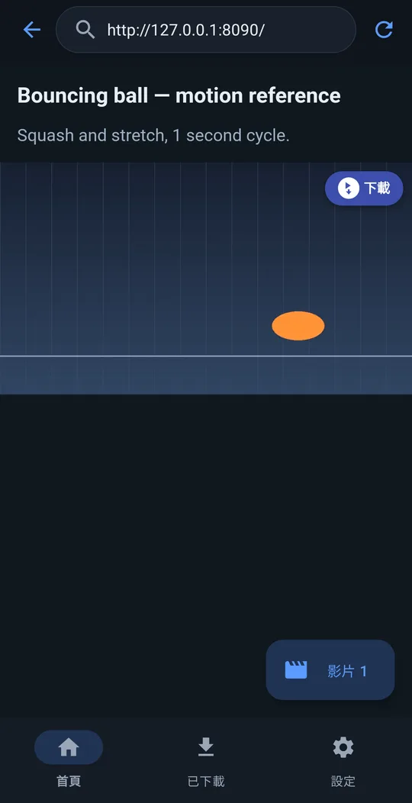
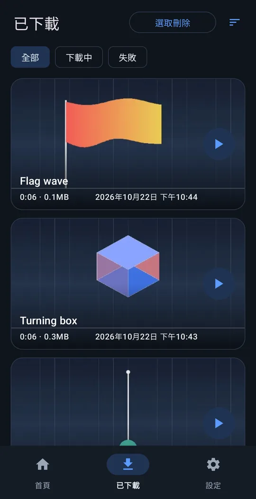
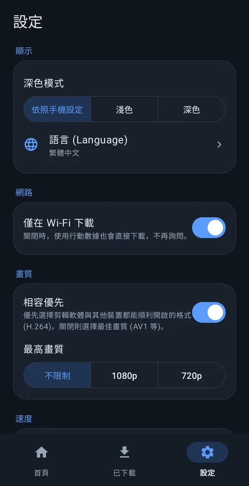

任何影片都能下載！！
貼上影片連結，輕鬆下載。
Android 8.0 以上 · 免費 · 免註冊
使用方式




功能
貼上連結下載
支援大多數常用影片網站。
影片上的「下載」按鈕
在內建瀏覽器中，頁面播放的影片上會出現「下載」按鈕——許多用連結下載不了的網站也能下載。
方便剪輯
儲存在 Movies/VideoRef。開啟「相容優先」後，會選擇剪輯 App 能直接開啟的格式。
背景持續下載
關閉螢幕也會繼續下載。還可以設定「僅在 Wi-Fi 下載」和最高畫質。
10 種語言
English, 한국어, 简体中文, 繁體中文, 日本語, Español, Deutsch, Français, Português (Brasil), Русский。淺色 / 深色主題。
不會傳送任何資訊給我們
免註冊，也不會傳送任何內容給開發者。
安裝
- 用上方按鈕下載安裝檔（APK）。
- 在手機上開啟下載的檔案。
- 若出現提示，請允許瀏覽器或檔案 App 安裝不明應用程式，再點安裝。
支持 just downloader
just downloader 是免費的。如果它幫你省下時間，一點小小的支持就是下次更新的動力。
常見問題
真的免費嗎？
是的，完全免費。免註冊，也沒有試用期。
會傳送我的資料嗎？
不會傳送個人資料。除非你自己寄出錯誤回報，否則不會傳送任何內容給開發者。隱私權政策
支援哪些網站？
大多數常用影片網站貼上連結即可。如果不行，用內建瀏覽器開啟頁面、播放影片後點影片上的「下載」。有防複製保護的付費串流影片無法儲存。
遇到問題？
設定 → 說明 → 回報問題 會建立附上 App 記錄檔的郵件，寄到 support@4dir.net。